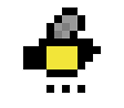

about.

Hello everyone! I'm Arya, born and raised in Kerala, in the south of India, and I'm really excited to be on this journey with you all. I love watching movies and anime, collecting stationery I never actually use, and having deep, meaningful conversations about life. I'm naturally curious and tend to pick up new hobbies all the time.
I've always been drawn to product management because I enjoy exploring how things work and solving problems. I currently work as a project manager and have always had a strong team first mindset. In college, I was an elected representative and actively involved in clubs and community services, and later continued contributing through initiatives such as Women in Tech and GServe in my work.
Outside of work, I enjoy being part of communities for women, literary clubs, and spaces that encourage learning, dialogue, and creativity. In this portfolio, I share my curiosity about different projects through their case studies and blogs, and I'd love to hear your thoughts and feedback on my work.